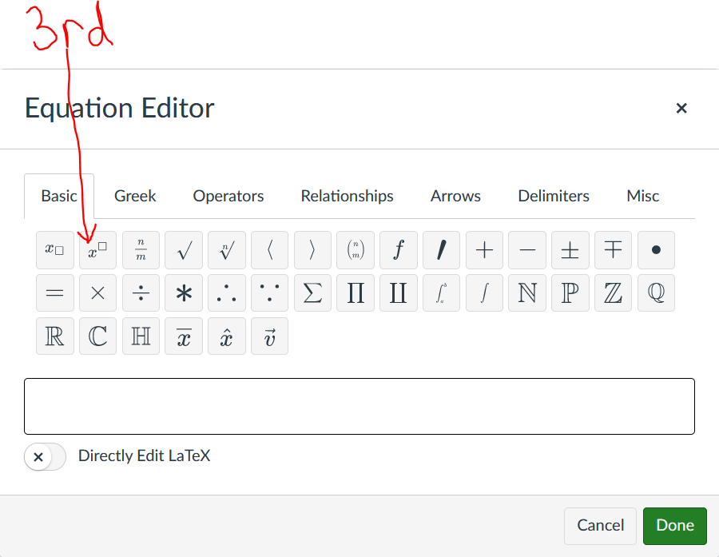
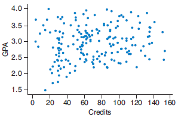
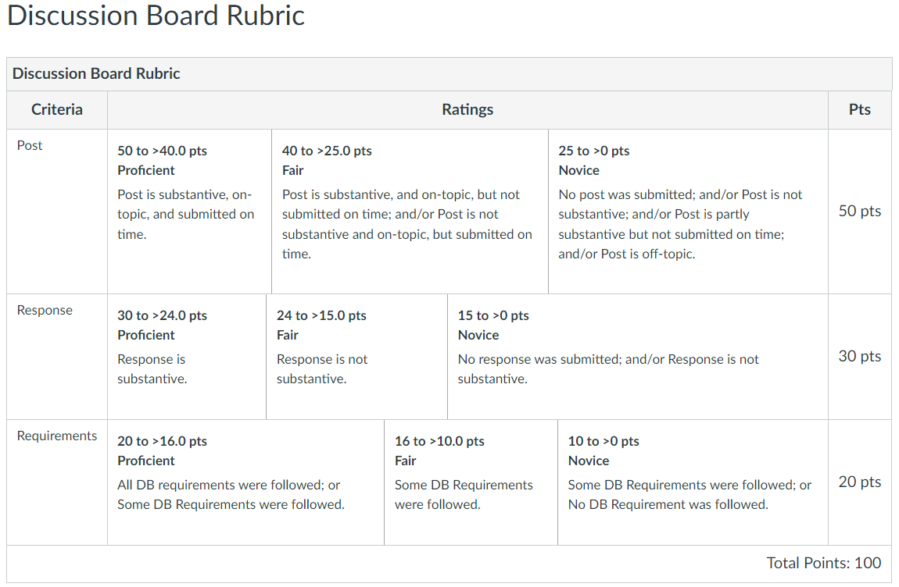

Discussion Board (DB) Assessments
Discussion Board (DB) Forum Requirements
Great Students,
Greetings to everyone.
To ensure a safe learning environment for everyone and a high academic standard for teaching and learning, I ask everyone to please follow these requirements.
(1.) Please review the Rules of Netiquette.
(2.) Each post should be unique and substantive. Please be creative.
(a.) The post should be on-topic as asked in the Discussion assessment.
(b.) There are several concepts/topics discussed each week as listed in the Pacing Guides.
When applicable, post on a different concept/topic that has not been posted by someone else, provided it is a topic/concept listed for that week.
(c.) Review all previous posts from your colleagues and my comments to their posts/responses as applicable, before you submit your own post.
(d.) Unless stated otherwise, all DB posts besides DB 1 are applied problems. We want our students to see the meaning of what they are learning. We want them to relate their learning
to real-world applications. In that regard, please post an application of the topic/concept. Review your
textbook (eText), solve an applied problem, check the solution at the back
of the textbook to ensure you got it correct. Then, submit your post by writing the applied problem completely, solving it by showing all work, and
interpreting your solution (Write – Solve – Interpret). Please see the DB Samples for examples of substantive posts.
(3.) (a.) The initial post is typically due on Thursday each week by 11:59 pm EDT.
(b.) Please make only one initial post. In other words, only one thread per student is allowed.
(c.) Multiple posts/threads are not allowed and will not be graded.
(d.) Re-posts are allowed and may be needed based on my comments to your initial post.
(e.) If you need to do a re-post, please post it as a response to my comments or as a response to your first post as applicable. But, please do not create a new thread.
(f.) I am not required to comment on every post. However, if I make any comment to your post, please make sure you address that comment as applicable.
(g.) If you do not understand my comments, please contact me via email and/or attend the Live Sessions/Office Hours. Typically, I do not go back-and-forth with a student
(responding more than one time to a student) in DB forums. Hence, it is highly recommended you contact me via email if you have any question regarding my comments.
(4.) (a.) The initial response (response to an initial post) is typically due on Saturday each week by 11:59 pm EDT.
(b.) In your response, please mention the first name of your colleague.
(c.) At least one response (one or more responses) to an initial post of your colleagues is required.
(d.) Please write a substantive response.
A substantive response is the response that provides constructive criticism, alternative approach that gives the same correct output, additional helpful information that will improve the post,
and the correction of any incorrect step and/or output among others.
How would you improve the initial post?
Did you find any errors in the initial post? If you do, please correct the error. Teach your colleague about the error, and explain to him/her how to fix it.
What new knowledge can your colleague acquire from you based on your response?
Can you solve the initial post using an alternative approach that will give the same correct output?
What real-world examples/applications can you provide based on the initial post? Discuss/Explain. Do not just state/mention. Cite your sources accordingly.
Did your colleague learn anything meaningful from you based on your response to the initial post?
Please focus on the initial post. Do not deviate from the concept/topic in the initial post. Do not bring up your own unrelated topic/concept.
Teach/Show your colleague something new and meaningful based on the initial post.
Please see the DB Samples for examples of substantive responses.
(5.) (a.) Any attachment should be inserted directly (not attached). Any attachment whose content is not entirely seen directly in the Canvas editor will not be graded.
This implies that no one should click your attachment to see it. Insert it directly so everyone can clearly see it. Please see (b.) below.
(b.) For all Math work (symbols, formulas, equations, fractions, radicals and exponents among others); please use the Insert Math Equation icon.


(c.) Alternatively, if your handwriting is legible; you can write your post/response on paper, take clear pictures of the entire work and insert directly in the Canvas editor.
Do not attach as a file. Insert directly in the editor as a picture.
Use the
Snipping Tool or the
Snip & Sketch on your computer to take clear screenshots and trim off excess space/irrelevant information, then insert the screenshots directly
in the Canvas editor.
(6.) (a.) Use an acceptable font and font size in all your writings.
Times New Roman font with at least a font size of 14pt is highly recommeded.
(b.) Make sure your post and response are well-formatted (visually appealing).
(7.) Please proof-read your writings for mechanical accuracy errors.
Any use of "i" attracts deduction of points.
Multiple mechanical accuracy errors will lead to deduction of points.
I understand that this is not an English class. However, you are expected to write well.
(8.) Sources must be cited accordingly.
You may use the: APA (American Psychological Association) style, MLA (Modern Language Association) style, or the Chicago Manual of Style.
(9.) Please review the
Sample Discussion Post and Response.
(10.) Please review the
Discussion Board Rubric.
Should you have any questions, please let me know.
Thank you.
Samuel Chukwuemeka
Working together for success
Discussion Board (DB) Samples
Sample 1:
Example Post
Topic: Correlation and Regression
Concept: Interpret Scatter Diagrams
Word Problem/Application:
The scatterplot shows the numbers of brothers and sisters for a large number of students.

(a.) Comment on the trend.
(b.) Does the direction make sense in this context?
Solution:
(a.) The trend is positive.
It is also linear though few points are scattered.
(b.) Since it is equally likely for a child to be a boy or a girl (probability of having a boy is the same as the probability of having a girl), this trend makes sense because large families are likely to have a large number of sons and a large number of daughters.
Interpretation/Conclusion/Decision:
The scatter diagram shows that students with more sisters tend to have more brothers.
In Statistics, the diagram has a positive correlation coefficient.
In PreCalculus and Statistics, the graph has a positive slope.
Reference:
Chukwuemeka, Samuel (2023). Scatter Diagrams. Retrieved June 26, 2023, from https://statistical-science.appspot.com/CorrelationRegression/scatterDiagrams.html
Example Response
Samuel, the example you provided show a positive trend.
It is also possible for scatter diagrams to display a negative trend or zero trend.
May I give you an example that shows a zero trend?
In this scatterplot that shows the data on credits and GPA for a sample of college students:

The trend appears to be zero because the number of credits acquired are not associated with GPA for the sample of college students.
The scatterplot shows that for any given number of college credits attained, the range in the GPA is approximately the same for almost any other number of credits attained.
Sample 2:
Example Post
Topic: Measures of Center
Concept: Grade Point Average (GPA)
Word Problem/Application:
At the end of the second semester, Rita earned an A in the 4-credit Algebra course, a B in the 3-credit English course,
a B in the 4-credit Biology course, an A in the 4-credit Chemistry course, and a C in the 1-credit Chinese Language course.
Using a 4-point grade system, A is equivalent to 4 points, B is equivalent to 3 points, C is equivalent to 2 points, D is equivalent to 1 point, and F has no point.
Calculate Rita's grade point average (GPA) for the second semester.
Solution:
Let us represent this information in a table.
GPA Calculation
| Course |
Grade |
Point |
Credit Hour (CH) |
Grade Point (GP) = Point * CH |
| Algebra |
A |
4 |
4 |
4 * 4 = 16 |
| English |
B |
3 |
3 |
3 * 3 = 9 |
| Biology |
B |
3 |
4 |
3 * 4 = 12 |
| Chemistry |
A |
4 |
4 |
4 * 4 = 16 |
| Chinese |
C |
2 |
1 |
$2 * 1 = 2$ |
|
|
|
$\Sigma CH = 16$ |
$\Sigma GP = 55$ |
$
GPA = \dfrac{\Sigma GP}{\Sigma CH} \\[5ex]
= \dfrac{55}{16} \\[5ex]
= 3.4375 \\[3ex]
\approx 3.44 \\[3ex]
$
Interpretation/Conclusion/Decision:
Rita's grade point average for the second semester is 3.44.
Reference:
Chukwuemeka, Samuel (2023). Measures of Central Tendency. Retrieved June 26, 2023, from https://statistical-science.appspot.com/DescriptiveStatistics/measuresCenter.html
Example Response
Nice work, Samuel.
The use of the table makes for easier comprehension.
Let's assume Rita already knows her grades in Algebra, English, Biology, and Chemistry, but does not know her grade in
Chinese.
She wants a GPA of at least 3.44.
What is the minimum grade that she make in Chinese to make at least a GPA of 3.44 for the second semester?
Let the point that she needs to make in the Chinese course be x
We do not know the grade but when we find the point, it will help determine the grade.
May I use your table?
GPA Calculation
| Course |
Grade |
Point |
Credit Hour (CH) |
Grade Point (GP) = Point * CH |
| Algebra |
A |
4 |
4 |
4 * 4 = 16 |
| English |
B |
3 |
3 |
3 * 3 = 9 |
| Biology |
B |
3 |
4 |
3 * 4 = 12 |
| Chemistry |
A |
4 |
4 |
4 * 4 = 16 |
| Chinese |
$x$ |
$x$ |
1 |
$x * 1 = x$ |
|
|
|
$\Sigma CH = 16$ |
$\Sigma GP = 53 + x$ |
At least a GPA of 3.44 means: ≥3.44
$
\implies \\[3ex]
\dfrac{53 + x}{16} \ge 3.44 \\[5ex]
53 + x \ge 16(3.44) \\[3ex]
53 + x \ge 55.04 \\[3ex]
x \ge 55.04 - 53 \\[3ex]
x \ge 2.04 \\[3ex]
$
A point of at least 2.04 means a C and above.
Rita needs to make at least a C grade in the Chinese course to earn a GPA of 3.44
Discussion Board (DB) Rubric
Discussion Board Rubric
| Criteria |
Ratings |
Points |
| Post |
50 to > 40.0 pts
Proficient
Post is substantive, on-topic, and submitted on time.
|
40 to > 25.0 pts
Fair
Post is substantive, and on-topic, but not submitted on time; and/or Post is not substantive and on-topic, but submitted on time.
|
25 to > 0 pts
Novice
No post was submitted; and/or Post is not substantive; and/or Post is partly substantive but not submitted on time; and/or Post is off-topic.
|
50 pts |
| Response |
30 to > 24.0 pts
Proficient
Response is substantive.
|
24 to > 15.0 pts
Fair
Response is not substantive.
|
15 to > 0 pts
Novice
No response was submitted; and/or Response is not substantive.
|
30 pts |
| Requirements |
20 to > 16.0 pts
Proficient
All DB requirements were followed; or Some DB Requirements were followed.
|
16 to > 10.0 pts
Fair
Some DB Requirements were followed.
|
10 to > 0 pts
Novice
Some DB Requirements were followed; or No DB Requirement was followed.
|
20 pts |
| Total Points: 100 |
Canvas Course Rubric:

Week 1 Discussion
Post:
May you please number your responses to these questions?
(1.) Please write a brief introduction of yourself.
Include whatever you want us to know about you.
(2.) Do you have access to a working computer (laptop/desktop) with Internet connection to complete the course successfully?
(3.) Have you reviewed the course syllabus?
If yes, do you understand it?
If no, please review it before continuation.
(4.) Have you registered for the MyLab Statistics assignments?
If yes, have you started any assignment?
If no, please stop now. Attempt at least one question before you continue here.
(5.) Have you reviewed the Discussion Board (DB) Forum requirements?
If yes, do you understand it?
If no, please review it before continuation.
(6.) Have you reviewed the Discussion Post and Response samples?
If yes, do you understand it?
If no, please review them before continuation.
(7.) Have you reviewed the Discussion Board rubric?
If yes, do you understand it?
If no, please review it before continuation.
(8.) (a.) How many types of graded assessments are there for this course?
(b.) What is the weight of each type of assessment?
(c.) Do you know how your MLM grades are calculated?
(d.) Do you know how to calculate your current course grade?
(e.) Do you know how to calculate your final course grade?
(9.) (a.) Have you reviewed the Welcome announcement?
If no, please review it before continuation.
(b.) If yes, what are the days and times for the Live Sessions/Office Hours?
(c.) If the days and times do not suit your schedule and you need to ask questions and/or contact the Instructor, what should you do?
(10.) Have you reviewed the Resources Available to Students?
If no, please review it before continuation.
If yes, do you understand it?
(11.) Have you reviewed the Pacing Guides?
If no, please review before you continue.
If yes, do you understand it?
(12.) (a.) Have you reviewed the Frequently Asked Questions?
If no, please review before you continue.
If yes, do you understand it?
(b.) Can you think of any question you have at the moment that you would like it to be addressed/answered?
If yes, please state so.
If no, please state so.
(More questions will be updated as needed, as we progress through the course.)
Response:
May you please number your responses to these questions?
(1.) Please review the brief introduction of your colleague.
Based on the introduction, say something nice to your colleague.
(2.) Please review the entire post of your colleague.
Advise your colleague on how to successfully complete the course.
Week 2 Discussion
Please review:
(a.) Discussion Board (DB) Forum Requirements
(b.) Discussion Post and Response (Samples)
(c.) Discussion Assessment Rubric
(1.) Then, please post:
Discuss a real-world application of any of the concepts/topics assigned last week or this week.
You may write a word problem and solve it, or you may write a paper regarding the application.
(2.) Then, please respond to the initial post of any of your colleagues.
Week 3 Discussion
Please review:
(a.) Discussion Board (DB) Forum Requirements
(b.) Discussion Post and Response (Samples)
(c.) Discussion Assessment Rubric
(1.) Then, please post:
Discuss a real-world application of any of the concepts/topics assigned this week.
You may write a word problem and solve it, or you may write a paper regarding the application.
(2.) Then, please respond to the initial post of any of your colleagues.
Week 4 Discussion
Please review:
(a.) Discussion Board (DB) Forum Requirements
(b.) Discussion Post and Response (Samples)
(c.) Discussion Assessment Rubric
(1.) Then, please post:
Discuss a real-world application of any of the concepts/topics assigned this week.
You may write a word problem and solve it, or you may write a paper regarding the application.
(2.) Then, please respond to the initial post of any of your colleagues.
Week 5 Discussion
Please review:
(a.) Discussion Board (DB) Forum Requirements
(b.) Discussion Post and Response (Sample)
(c.) Discussion Assessment Rubric
(1.) Then, please post:
Write a one-page summary (minimum of 250 words) of what you learned in the class.
Please review your writings.
Give specific examples.
(2.) Then, please respond to the initial post of any of your colleagues.